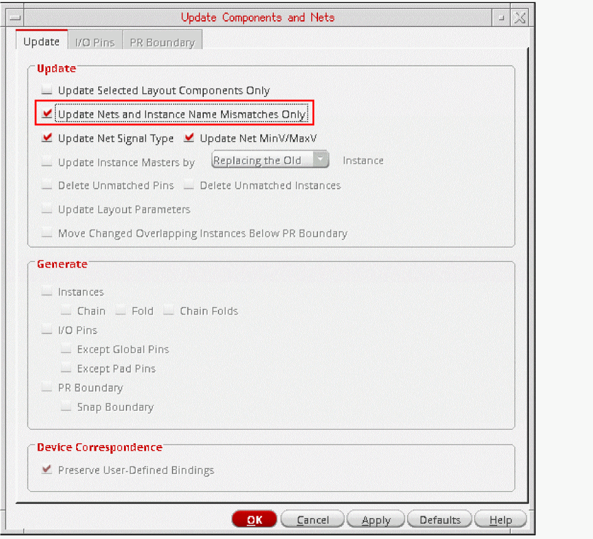

Updating Nets and Instance Name Mismatches Only
To update only the net assignments and instance and net names in your layout design without changing any other components:
- Select the Update of the Update Components and Nets form.
-
In the Update group box, select the Update Nets and Instance Name Mismatches Only check box.
Preserve User-Defined Bindings is selected but inactivated, ensuring that these bindings are maintained. All other options on the form are inactive, except Update Selected Layout Components Only and Update Net Signal Type. - To update only selected instance and pins, select the Update Selected Layout Components Only check box.
- To update the signal types assigned to nets and the min and max voltages on the schematic nets, select the Update Net Signal Type check box.
-
Click OK.
Layout XL updates net assignments and instance, terminal, and net names to match those in the schematic. If any pins have got swapped due to a schematic ECO, running the Update with Update Nets and Instance Name Mismatches Only selected ensures that the original pin positions are retained in the layout. To reflect the pin swaps in the layout, run the Update with Update Nets and Instance Name Mismatches Only deselected.
Related Topics
Update Components and Nets Form
Return to top